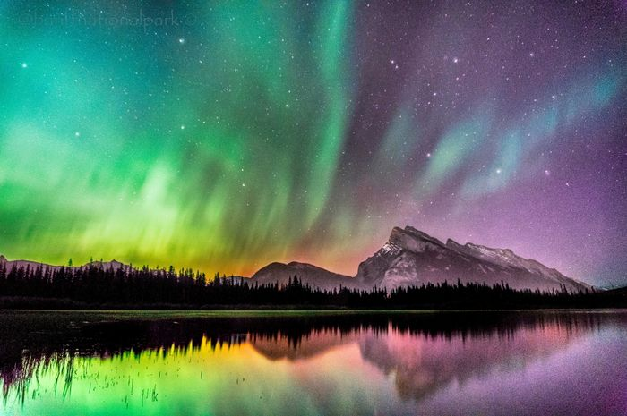

Fenomena Aurora
Selamat datang di Blogku! Artikel ini membahas tentang keindahan dan misteri di balik fenomena aurora, cahaya alami yang memukau di langit malam. Aurora, yang juga dikenal sebagai cahaya utara (aurora borealis) di belahan utara dan cahaya selatan (aurora australis) di belahan selatan, adalah fenomena alam yang menakjubkan yang terjadi ketika partikel-partikel bermuatan dari angkasa menghantam atmosfer Bumi dan berinteraksi dengan molekul dan atom di atmosfer, menghasilkan cahaya yang berwarna-warni di langit.
Fenomena ini sering terlihat di daerah-daerah kutub, seperti Alaska, Kanada, Norwegia, dan Islandia, tetapi terkadang juga dapat terlihat di daerah yang lebih jauh dari kutub terutama selama periode aktivitas matahari yang tinggi. Selain keindahannya, aurora juga menjadi objek penelitian ilmiah yang penting, karena dapat memberikan informasi tentang aktivitas matahari dan interaksi antara matahari dan Bumi.
Dalam artikel ini, Anda akan menemukan fakta menarik dan informasi terbaru tentang aurora, termasuk penjelasan tentang bagaimana aurora terbentuk, mengapa memiliki warna yang berbeda-beda, dan bagaimana cara terbaik untuk melihat aurora secara langsung. Mari kita jelajahi keajaiban alam yang mempesona ini bersama-sama!